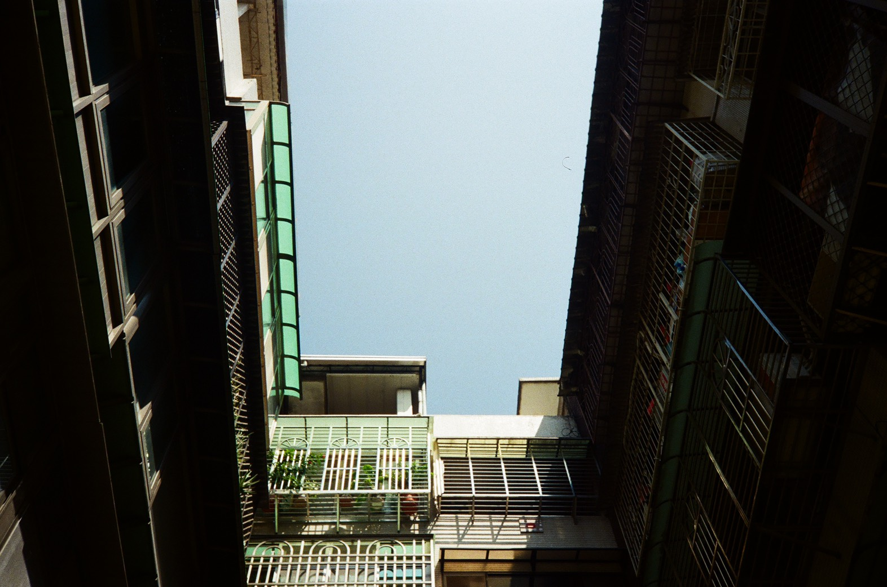

施子涵 Z-H Shi
南投縣名間鄉新民村新民巷58之38號·
No. 58-38, Xinmin Ln., Mingjian Township, Nantou County 551, Taiwan (R.O.C.)
lhhzx2000@gmail.com
我是施子涵，目前就讀世新大學資訊傳播學系，我喜歡聽各種類型的音樂也對攝影非常有興趣，希望之後能善用系上的資源更增進自己這方面的專長，未來也能順利將自己的興趣變成職業。
經歷
高二擔任春暉社公關長
負責與他校春暉社建立良好關係，共同舉辦活動
春暉社是一個以反毒、反菸、反霸凌為核心思想的社團，而公關長負責的是宣傳本校社團及理念，並積極與外校春暉社建立良好關係，共同舉辦活動，也一起創造精彩的高中社團生活。
9月 2016 - 7月 2017
南投高中社會組招生影片
製作招生影片並提供給即將升高中的學生們參考
從構思到最後影片的完成都參與其中，讓我學到很多關於拍片的技能，而這部招生影片的目的是為了讓不了解社會組與自然組差別的國中生能夠更深入了解，進而明確自己未來的走向。
3月 2017 - 7月 2017
大一傳播技能展-攝影組三妝
負責演員們的服裝、妝容、髮型
由於我本身對於服裝很感興趣，所以一直都希望能進入這個組別，期許自己能讓劇組的演員在鏡頭上非常亮眼
9月 2019 - 7月 2020
華興育幼院課輔志工
大一利用課餘時間到華興育幼院替小朋友課輔
這是我第一次參與志工服務，是個非常特別的經驗，也讓我發現國小生其實比我想像得成熟也懂的多，能夠利用自己的課餘時間去從事有意義的活動，也讓我感到滿足。
9月 2019- 1月 2020
教育
世新大學
資訊傳播學系
9月 2019 - 目前
國立南投高中
普通科社會組
9月 2015- 6月 2018
技能專長
程式語言和軟體工具
專業能力
- 影像數位化編輯
- 網頁的編排與設計
- 網站開發
興趣愛好
平常我會利用課餘時間玩玩底片，比起數位相機我更喜歡底片帶來的溫度，也更能感受到每一張底片的珍貴，而音樂對我來說就是日常，也是種情緒的發洩,我也喜歡利用週末的時間跟家人找部電影來看，一起進入不同的世界，感受電影的氛圍。
Awards & Certifications
- 英檢初級
- 英檢中級
我的最愛
我很喜歡利用生活的各種空檔聽音樂，常聽的類型也很廣，不同心境適合不同的音樂，對我來說聽音樂是種心靈的療癒，感覺生活沒了音樂就好像沒有色彩。
| 歌手 | 歌名 | 年份 |
|---|---|---|
| WINNER | Remember | 2020 |
| Inhon | Whatever | 2019 |
| HowZ | Rain | 2019 |
| 落日飛車 | 我是一隻魚 | 2019 |
| deca joins | 巫堵 | 2017 |
| 寬容 | 張信哲 | 1995 |
作品集
1.
你在我相機裡的樣子
2.
育幼院的夕陽
3.
光圈
4.
囚裡的天空
5.
韓國街頭
 6.
6.
找回童心的那刻
7.
想去動物園看獅子
8.
牛仔真的很忙
9.
台灣